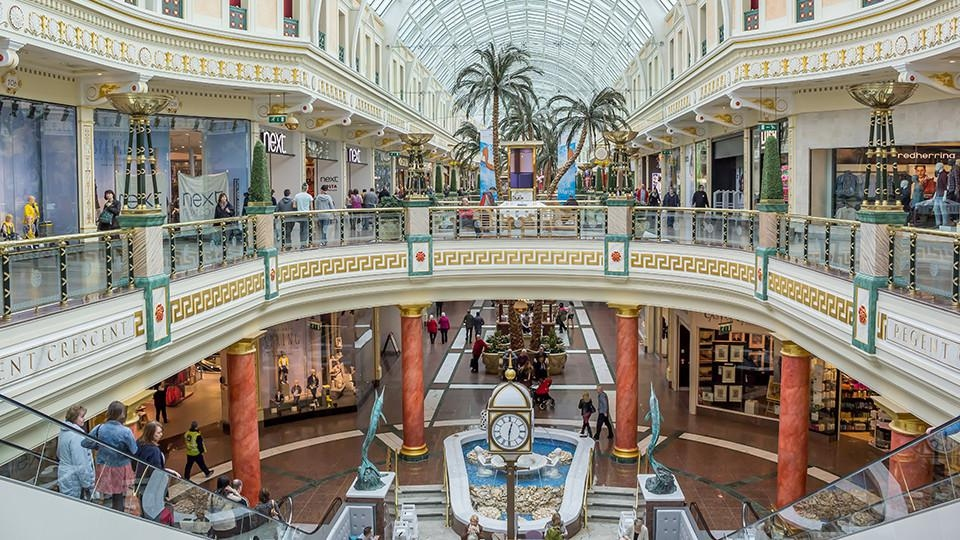

Shopping who doesnt like getting new clothes or shoes thats why manchester has the best place to go and get new clothes because have alot of places to go and one of them is the trafford centre this whole buliding has everything you want all diffenet types of brands and a bunch of fast food places and it also has an arcade room with bumpercarts and an bowling ally so you can have a family day out.
Shopping who doesnt like getting new clothes or shoes thats why manchester has the best place to go and get new clothes because have alot of places to go and one of them is the trafford centre this whole buliding has everything you want all diffenet types of brands and a bunch of fast food places and it also has an arcade room with bumpercarts and an bowling ally so you can have a family day out.
Trafford Centre 